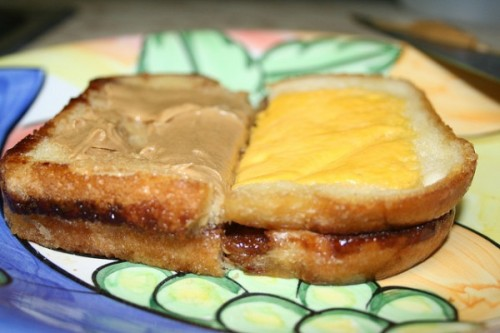

Grilled Charlie Recipe

This is a receipe for how to make a Grilled Charlie
This is a delicious sandwhich crafted by world renowned chef and restaurateur Charlie Kelly.
It is easy to make and requires very little prep or cooking utensils. Remember, a Grilled Charlie
gets peaunt butter last!
Ingredients
- White Bread
- Butter
- Hershey's Chocolate Sauce
- American Cheese
- Peanut Butter
Steps
- Preheat a pan to medium heat on your finest hot plate. Spray cooking spray in the pan so your sandwhich doesn't stick
- Over medium heat, place 2 slices of cheese in the pan, followed by a buttered slice of white bread (buttered side should be facing UP).
- Heat for 2 minutes or a bit longer, being careful not to burn the cheese (this may take a little experimenting depending on how hot the pan is).
- Next, drizzle or squirt Hershey's chocolate sauce on top of that BEFORE placing another slice of white bread also buttered on one side (again, buttered side facing up) on top.
- Let the sandwich cook for another minute. The cheese will be brown, but before the cheese burns, flip the whole mess over so that the buttered bread that you just placed on top will brown nicely and make the bread crispy (just like when you make a grilled cheese sandwich).
- The final step occurs after you take this concoction off the heat and flip it onto your plate (cheese side down); immediately smear the top with a thin layer of creamy peanut butter while the sandwich is still hot.
- Note: The peanut butter does NOT get grilled. Think of it as a condiment that goes on last, after the cooking is done. Serve immediately.